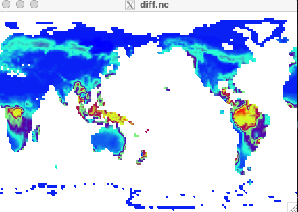

Exercise 3: Change a FATES complexity variable#
FATES can run in several “complexity modes” that change how plant functional types (PFTs) are assigned to patches. Three common ones are controlled by namelist variables in user_nl_clm:
use_fates_sp: turns on satellite phenology modeuse_fates_nocomp: turns on “no competition” mode, where each patch holds a single PFTuse_fates_fixed_biogeog: turns on fixed biogeography, where the PFTs allowed at each grid cell and their areas are read from the surface dataset rather than determined by the model.
These are logical variables, so they take .true. or .false..
Exercise: Choose a FATES complexity mode#
Create a new case named i2000_fates_nocomp using the compset I2000Clm60FatesCrujraRsGs and resolution f19_f19_mt233.
Turn on no competition and fixed biogeography.
Run ./preview_namelists and check that CaseDocs/lnd_in shows both variables set to .true.. Then run the case for 1 month and compare your output to the existing i2000_fates_sp.basics output after it finishes.
Click here for hints
Where are the parameters?
The variable you are looking for is:
use_fates_nocomp
use_fates_fixed_biogeog
It can be modified directly in user_nl_clm.
Compare this run with the FATES SP run
Compare this run with the case you created in the basics exercise:
i2000_fates_sp.basics
Both cases produce output on a ~ 1.9° × 2.5° latitude–longitude grid, making them easy to compare using NetCDF tools.
You can use ncdiff to compute differences:
module load nco
ncdiff /glade/derecho/scratch/$USER/archive/i2000_fates_sp.basics/lnd/hist/i2000_fates_sp.basics.clm2.h0a.2000-01.nc \
/glade/derecho/scratch/$USER/archive/i2000_fates_nocomp/lnd/hist/i2000_fates_nocomp.clm2.h0a.2000-01.nc \
diff.nc
Then visualize the result:
module load ncview
ncview diff.nc
How does changing the FATES complexity mode affect the FATES_LAI field?
Click here for the solution
Create new case
cd /glade/u/home/$USER/code/my_clm_code/cime/scripts/
./create_newcase \
--case ~/cases/i2000_fates_nocomp \
--compset I2000Clm60FatesCrujraRsGs \
--res f19_f19_mt233 \
--run-unsupported
Setup
cd ~/cases/i2000_fates_nocomp
./case.setup
Customize the CLM namelist
Edit user_nl_clm and add:
use_fates_nocomp = .true.
use_fates_fixed_biogeog = .true.
Set the run length
./xmlchange STOP_N=1
./xmlchange STOP_OPTION=nmonths
Change the wallclock time, job queue and project number
If needed:
./xmlchange JOB_WALLCLOCK_TIME=01:00:00
./xmlchange JOB_QUEUE=tutorial
./xmlchange PROJECT=UCGD0011 --force
Use the project number provided for the tutorial.
Check to see if your change worked
You can use ./preview_namelists and then look in CaseDocs/lnd_in to see what the model
inputs will be after your modifications:
./preview_namelists
grep "use_fates" CaseDocs/lnd_in
Build and submit
qcmd -- ./case.build
./case.submit
Analyze the results
When the run completes, compare it with the i2000_fates_sp.basics case.
Create a file containing the differences:
cd /glade/derecho/scratch/$USER/archive/i2000_fates_nocomp/lnd/hist
module load nco
ncdiff /glade/derecho/scratch/$USER/archive/i2000_fates_sp.basics/lnd/hist/i2000_fates_sp.basics.clm2.h0a.2000-01.nc \
/glade/derecho/scratch/$USER/archive/i2000_fates_nocomp/lnd/hist/i2000_fates_nocomp.clm2.h0a.2000-01.nc \
diff.nc
Visualize the differences:
module load ncview
ncview diff.nc
Display the FATES_LAI field and examine how it changes.
Discussion
You should see large differences, with the SP run having much higher LAI. This is expected, and it is not an error. The SP run uses prescribed leaf area from satellite observations, so it has realistic LAI from the first timestep. The nocomp run is a full FATES run started from bare ground, so the vegetation has to grow from scratch. After one month there are only tiny seedlings, and LAI is close to zero.
The pattern you are seeing is therefore a measure of how far the nocomp run is from equilibrium, not a difference between the two model configurations. To compare prognostic FATES to SP in a meaningful way, you would first need to spin up the FATES run for many decades to centuries.
The field FATES_LAI difference looks like

Figure: Difference of FATES_LAI for sp vs. no-comp